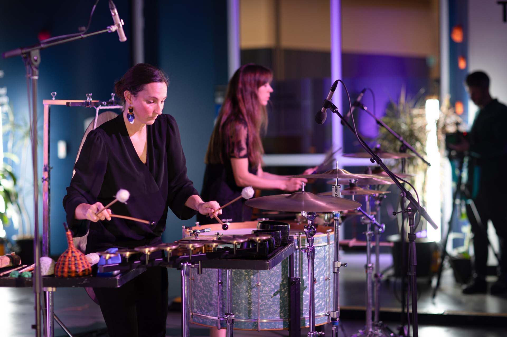

Archive / Performance
μMuography — Live Performance
- When
- 2023
- Location
- Science Gallery Melbourne
- Programme
- Dark Matter / Friday Night Social
- Performers
- Jon Butt · Kaylie Melville · Zela Papageorgiou · Lewis Gittus
Live performance
Jon Butt with Kaylie Melville and Zela Papageorgiou of Speak Percussion, and Lewis Gittus.

Project statement
Sound as a way of approaching realities beyond ordinary human perception and scale.
As part of the μMuography project for the Dark Matters exhibition at Science Gallery Melbourne, artist Jon Butt collaborated with percussionists Kaylie Melville and Zela Papageorgiou of Speak Percussion, alongside two non-human performers: a DIY muon particle detector and a vinyl record created with Lewis Gittus as part of the μMuography: Muon Sound Lab presented at Science Gallery Melbourne during National Science Week in August. During the open studio, Butt and Gittus began an ongoing exploration of the forces at play within μMuography, translating the detection of subatomic particles into sound.
For the live performance, Kaylie and Zela continued this conversation, responding in real time to both the vinyl recording and the live detection of muons. Travelling at close to the speed of light, these particles may have originated millions or billions of years ago, crossing immense distances through space before being detected within the gallery.
The work explored sound as a way of approaching realities that exist beyond ordinary human perception and scale — where language becomes inadequate, sound can offer another way to articulate the unfathomably vast and complex.